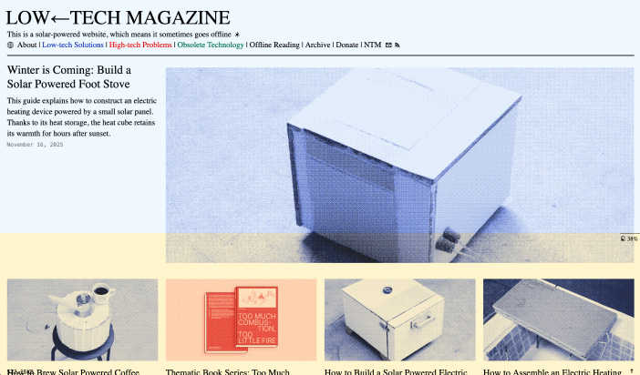
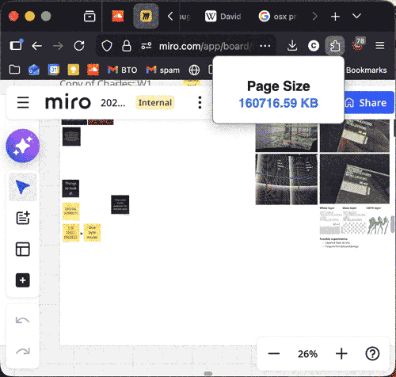
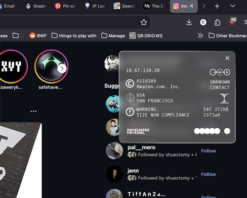
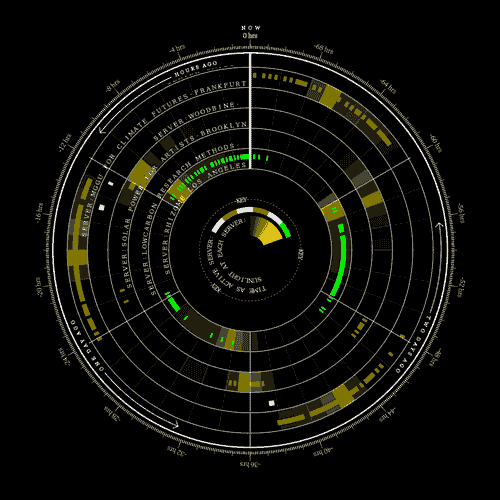
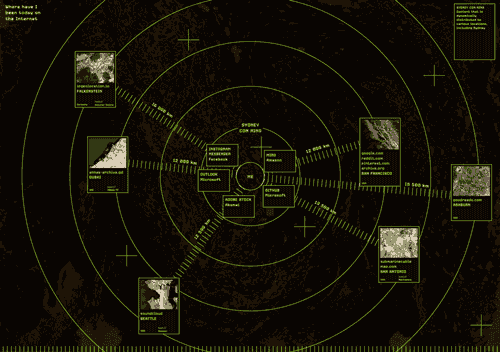
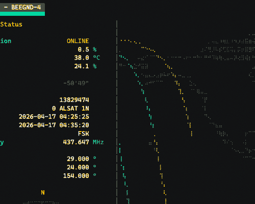
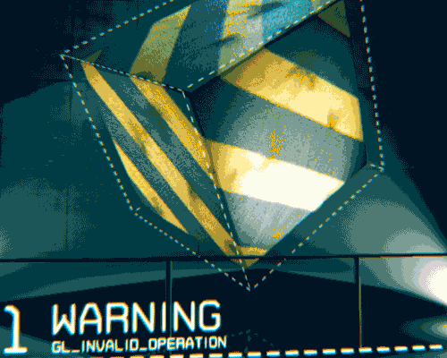
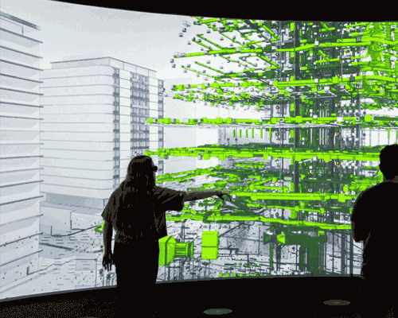
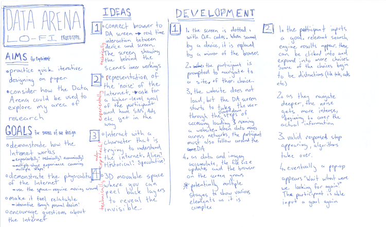
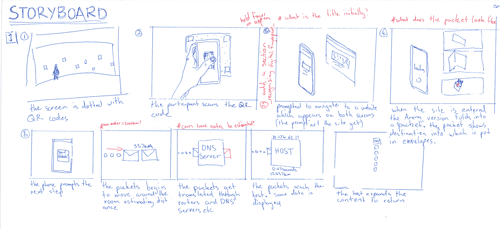

plain html (684 KB)
legible css (688 KB)
designed css (696 KB)
2A Annotated Process
Charles Marlow
How might we design for the Internet if we redefine the value of its resources?
Overview Map
I am exploring the infrastructures and resources of the Internet. What actually happens, who pays, where do things exist in physical space, what processes are involved. In particular, I am interested in how the current Internet is designed with consideration of three basic resources: energy, data and attention.
I am researching this by investigating my own relationship with the Internet, both personal/emotional and literal (what is the physical impact of my use of the internet). To display my findings I want to create some kind of interactive exhibition, either hardware/object driven digital interaction, or Data Arena spatial interaction (or a combination), and creating that in a way that invites audiences to reconsider the value of the Internet's resources. I am also investigating aesthetics of a digital past, as aesthetics that were driven by technical limitations and hence efficiency, efficiency that no longer seems to be necessary.
I want to understand my own relationships to these technologies and understand how they work so that I can better express my values through my work and general use of technology. Through this understanding I want to try and create an experience that invites people to better understand the Internet, understand their emotions around it, and perhaps imagine alternatives.
Low Tech Magazine
anchor

"Low-tech Magazine questions the belief in technological progress, and highlights the potential of past knowledge and technologies for designing a sustainable society."
by Kris De Decker
Collect & Catalogue
experiment
Aims
- How might I investigate the language of the tech hegemony?
- How might I use interaction on the web to provoke emotional responses from audience members?
- How can I reveal hidden truths or feelings?
Reflection
After designing the artwork, which I had made vector based because it is suitable for the web (low file sizes, scalable, animatable etc) I was looking at it and realised these factors that make it suitable for the web also make it feel like it is too closely speaking the language of the web that I wanted to challenge (or at least investigate) so I think trying some different styles or seeing how vector illustrations can be pushed to a different sort of language would be beneficial to this project.
I used Google's gemini to see how well it was able to assist me with the small amount of code needed. I must admit the feedback is quite useful, from a small snippet it could tell me, this function name you have created is the same as a default function that exists already so it is creating a conflict that the code cannot handle. I would never be able to work this out without someone who knew that default function exists. However, if I don't understand the code that I'm working with, I can't edit it to do what I actually designed in the way I designed it, so I find it more useful to try the thing and when I'm truly stuck looking at something that I can't possibly progress with, to consider how AI might be helpful. Although this doesn't make it an experience without some sense of unease.
Once I had the prototype, I found myself drawn to the scene with the flowers. The language juxtaposed with a scene of flowers seemed to be asking a more interesting question about knowledge, teamwork, experts, or whatever else the quotes I had gathered were discussing. What if we spoke about nature as we did AI? What else do we not consider that could be interesting to speak of this way?
What's next
I think I'm largely done with this idea, but I should keep exploring web aesthetics and interaction.
Words
anchor
“You and I have been able to connect because I wrote this and you're reading it. That's the web.”
by Justin Jackson
Honours Web Journal
experiment
Aims
- How might I explore physical existence on the Internet?
- How might I learn about all the small details that add up to a “bloated” Internet?
- How might I present my work and writing online?
Reflection
I think it has been an enlightening process in a bunch of ways. Seeing the sizes of the files, figuring out how to lay things out in html, putting my writing into a format the web understands and even my own reactions—"oh this is something I would scroll past or click away from". Trying to build a system to make the process efficient, noting the inefficiencies of doing it this way. Keeping the Journal alive and updating it as I encounter new projects or references keeps me thinking about how to make certain code work or how to make these things more effective.
I think I should consider how to curate the words and the content more, to make it more of an interesting experience without people having to wade through my thoughts. I recognise that this takes time and energy, and I find it uncomfortable in that I shy away from doing it. All the more reason to practice.
I recently read a blog post by MDN about how their website is basically a bunch of mark up files converted by javascript into the html served by their servers. It would be interesting to see if I could emulate this and have my markup files converted automatically into html pages formatted for my site.
What's next
I want to keep this Journal running, keep learning and keep developing the process of converting my work and writing to a format for the web that I have control over.
Website size info extension
experiment

Aims
- How can I see the data being transferred across the network?
- How good are LLMs at vibe coding really?
- How might I use a browser extension as a design outcome?
Reflection
I was impressed at how well the LLM interpreted what I was asking for. It made a simple small prototype, and it also provided explanations for how it worked, how to test it in Firefox, and also limitations and technical details that might mean this prototype isn't 100% accurate for what I am trying to do. Even with these 2 or 3 prompts, I was directed to some information I was not aware of, terms like Digital Sobriety, organisations like The Shift Project which are defining ways to calculate data to energy usage.
I think overall, despite the glaring hypocrisy of using an energy hungry technology to prototype an energy conscious one, this felt like a pretty good experiment with LLMs. It was small and low scope enough that a couple of short prompts got what I needed out of it, it let me explore technologies and coding language I don't know and it gathered additional context around those technologies to help me learn about them. Understanding that I just wanted a prototype from the LLM was I think important. It's not pretty, I don't need Gemini to tweak any of the details, I just want to see how the technical side might work, it did this quickly and easily and there was no need to continue using the LLM after that.
Through this process I learned about packets, how they deliver data, how you can snoop inside and see how much data they contain, and was able to recognise more about that process. It also was good to help me think about how it could be visualised.
I think there is something to this idea of using browser extensions. As Zoe said, demonstration is powerful, make these invisible details of your internet experience visible and in your face and you can better understand them. Perhaps it is an uncomfortable truth and it would be hard to convince actual end users to install something like this, so maybe it should be designed for a specific space, for some kind of exhibition or demonstration?
Exploring Aesthetic (Website size info extension 2)
continued experiment

Aims
- How might I design a browser extension showing normally hidden data?
Reflection
I think the design looks kind of cool and "official", but perhaps needs to be more intelligible. It could be made more intelligible in this aesthetic, but perhaps a different one would be preferable. I also need to organise the info and create some set of guidelines about what is a lot of data or what is worth showing.
What's next
I like the idea of an extension, but perhaps the more relevant aspect to this year is continuing to find way to understand what's happening in the background, and how to make it legible and interesting. How can this information be presented in a more dynamic interactive way?
Solar Protocol
anchor

“The [solar protocol] network routes internet traffic according to the logic of the sun, where page requests are sent to whichever server is enjoying the most sunlight at the time.”
by Tega Brain
Digital Travel Log
experiment

Aims
- How can I see where I go digitally on the Internet?
- How might I visualise the data I collected?
Reflection
I learnt a lot during the research phase of this experiment, where servers are, who controls them, how much information is publicly available, how these things work (not fully though, god it's complicated).
However, the visualisation part of the experiment was not so fruitful, I found it quite difficult to even get to an idea of how it should look, drawing out ideas on paper but not feeling like they really helped. I gave up and just decided to make something, to experiment, I made the wrong thing.

I know this is a step that must be taken to get to the right thing, but it still feels kind of bad. So I stopped working on that and tried a different approach, which was definitely a step in the right direction. I still find the visualisation of information to be challenging.
What's next
Similar to the browser extension experiment, I want to keep developing the aesthetic and the interaction that brings this data into a more visible place.
BEEGND-4
anchor

Satellite tracker running in a terminal UI (monospace text only). Uses braille characters for the curves.
by TU Berlin Amateur Radio Club
Domain Demo
anchor

Demoscene demo written entirely in 64kb of code (all graphics are generated by code.)
by 0b5vr
Conway's Game of Life
experiment
Aims
- How can code generate interactive imagery?
- How might I better understand how code works?
- How much can you get from a small file of code?
Reflection
I think I managed to learn quite a lot through this process, keeping track of what I don't understand but also just following the logic of the tutorial and understanding how code makes these things happen. It is definitely helpful to just keep going through the tutorial and leaving notes on the confusing parts, and making sure I have time to return to them straight afterwards. However it was very tiring...
I wonder how to design for these kinds of things? How do you create something that will be controlled by variables and understood by code?
What's next
Continue to explore how code can create interesting, interactive visual experiences. Try to understand what is demanding on the computer and what is less so.
Instagram Tiles
experiment
Aims
- How might I tell the story of my work?
- How can Instagram facilitate this?
- Should I betray the platform?
Reflection
I think it was a good process to go through to evaluate my own work, to try and tease out the interesting or useful aspects, and present it in an intelligible way for the Internet. However it still feels difficult to me, and is a task that I easily lose focus or shy away from. Perhaps this is a feature of an inner critic or just an unfamiliarity with writing or design, the gap between taste and ability.
It was interesting to explore creating posts with intentionality. Even simple things like preparing the files for the right aspect ratio and pixel size, I could see the file sizes and better consider the value proposition of permanently giving these files to Meta. On the other hand designing for this format also felt kind of better. The work itself can be elevated by putting it into a well considered layout or structure within the Instagram platform. I find my work is quite conceptual or at least, speaking to questions or research that I'm doing, so including writing in the posts felt like it was a positive.
I think I need to continue finding time for exploring the narratives of my work. Even if it is not to go out into the world, I think I should be better and more confident at discussing my own work.
Paying attention to how other people do this, and their language and attempting to emulate the parts that I think work and make sense for my practice. Maybe even allowing time to actively explore how other people do this. I think for now I should continue to refine this process for Instagram and actually make these posts. Exploring alternatives into the future is also something I would like to do, a self hosted folio website etc.
What's next
Keep writing, and editing that writing into more digestible formats. Post something online. Document the process and feelings as they come up.
Data Arena
anchor
UTS Central

Previsualising architecture in 3D and revealing infrastructures.
by Darren Lee, Ben Simmons et al
Lo-fi Data Arena Experience Design
experiment


Aims
- Practice designing and iterating with low fidelity.
- How might I explore my concept with the Data Arena?
Reflection
I always feel some sense of restriction when working with paper, you can edit or shift things around. But this process led me to think about how I work with paper, for example if I am making a storyboard, why are they not cut out rectangles so they can be moved around? Regardless it was very beneficial in trying to plot out the story of an experience, encountering pain points, thinking about space etc.
In terms of thinking about creating for the Data Arena, I think there is a lot of potential there and it is something that I would really like to achieve and perhaps maps closer to what I might see myself doing in the future.
What's next
Meet with Thomas at the Data Arena, discuss possibilities. Small scale interactive experiments in HTML, CSS and JS. Iterate on the large scale ideas (workshop?).